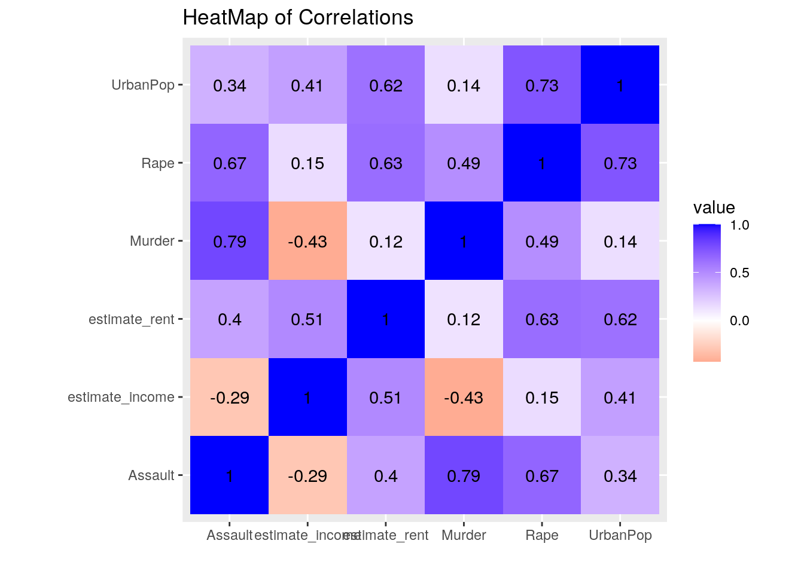
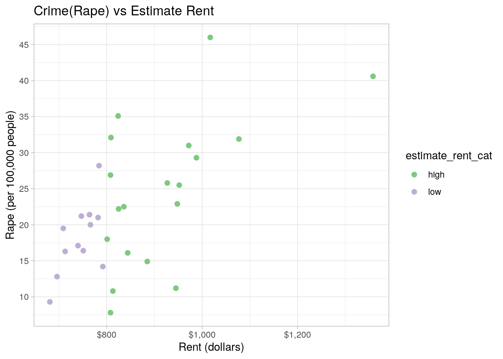
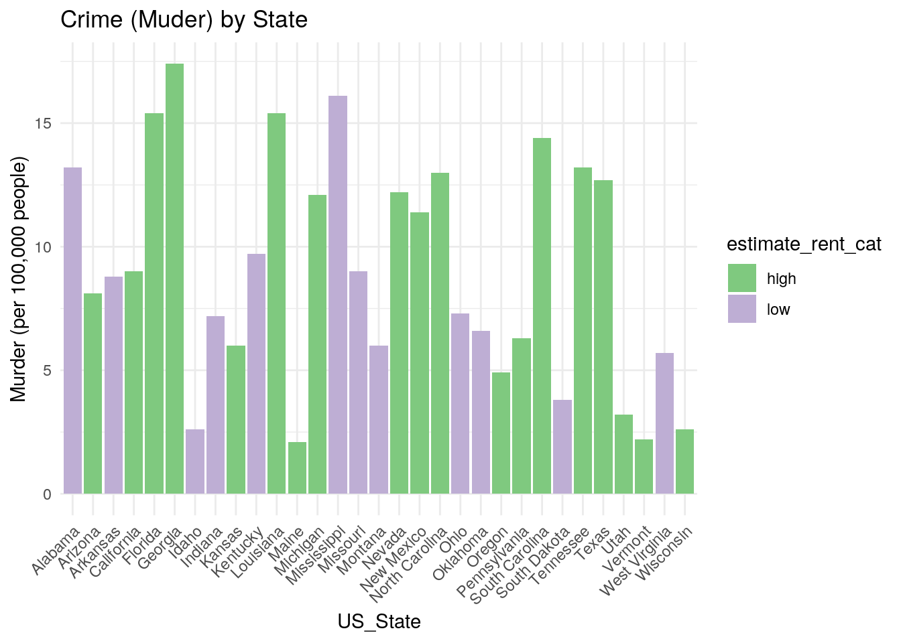
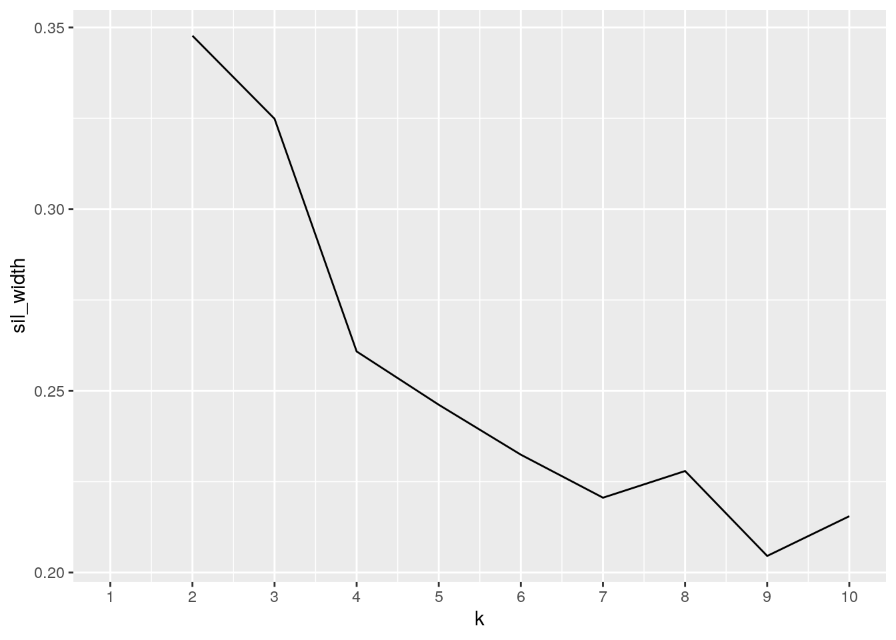
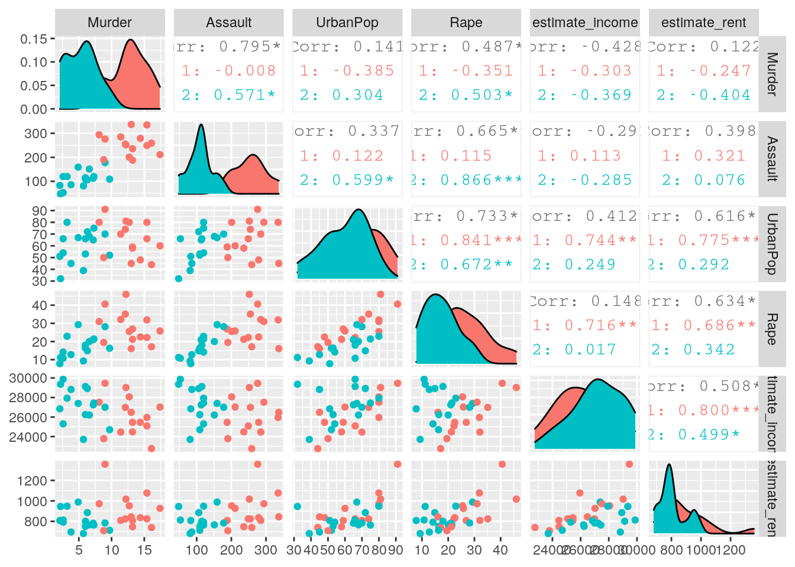
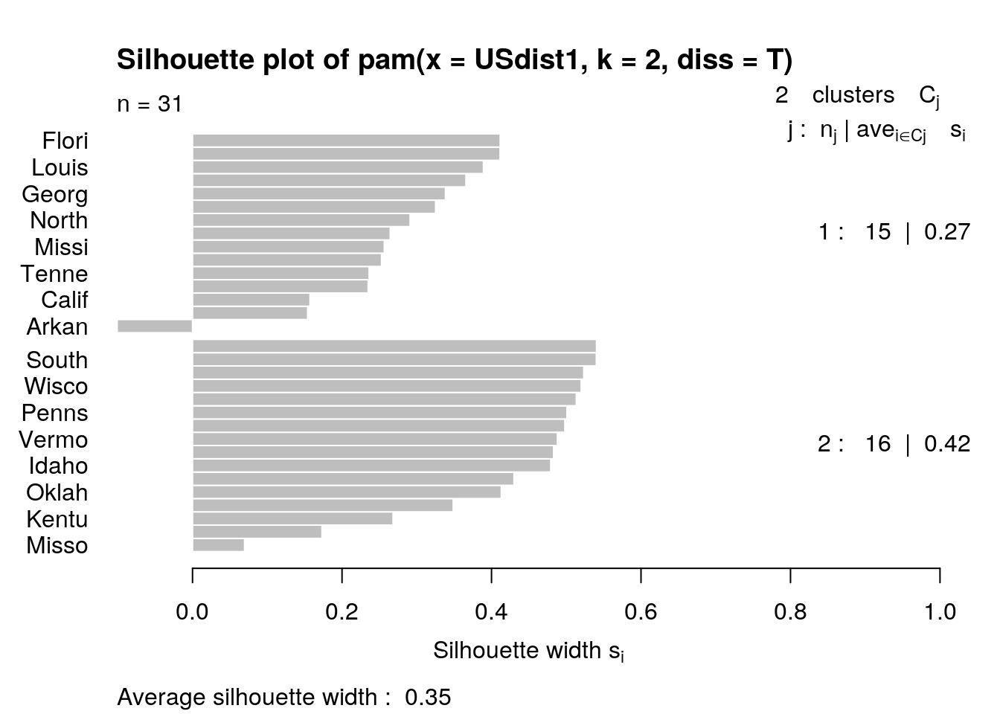

October 18, 2020
Data Wrangling and Data Exploration

Introduction
The datasets I have chosen inspect two unique sets of characteristics about each state of the United States. The US Arrest dataset examines the rates of various violent crimes in 1973, as well as the percentage of the population living in urban areas. It contains 4 variables: murder, assault, rape, and UrbanPop, and these variables are measured per 100,000 people. The data was acquired from the World Almanac and Book of Facts (1975) by researcher D.R. McNeil.The 'us_rent_income' dataset was acquired from the 2017 American Community Survey. The dataset captures the rent and income across the 50 states of the United States, the District of Columbia, and Puerto Rico in 2017. The dataset contains 5 variables: the FIP state identifier (GEOID), state name, the variable indicated (rent or income), the estimated value, and the margin of error (moe).
I am interested in these datasets because I am currently working on a certificate in Social Inequality, Health, and Policy. In several courses, my professors have discussed the relationship between social factors, like crime rates, and the quality of living. The potential association I would expect is that states with higher rates of crime in 1973 developed into states with an overall higher cost of living and income in 2017. Higher rates of crime would most likely be taking place in areas that were more urbanized. States with areas that were a hotbed for a criminal activity most likely developed into states with more urbanized areas, and in turn have a higher cost of living and income. The relationship between crime rates, income, and cost of living (i.e. rent) may be an indicator of the quality of living across the different states.
I ran the two datasets below:
library(tidyverse)
USArrests <- read_csv("http://vincentarelbundock.github.io/Rdatasets/csv/datasets/USArrests.csv")
head(USArrests)## # A tibble: 6 x 5
## X1 Murder Assault UrbanPop Rape
## <chr> <dbl> <dbl> <dbl> <dbl>
## 1 Alabama 13.2 236 58 21.2
## 2 Alaska 10 263 48 44.5
## 3 Arizona 8.1 294 80 31
## 4 Arkansas 8.8 190 50 19.5
## 5 California 9 276 91 40.6
## 6 Colorado 7.9 204 78 38.7us_rent_income <- tidyr::us_rent_income
head(us_rent_income)## # A tibble: 6 x 5
## GEOID NAME variable estimate moe
## <chr> <chr> <chr> <dbl> <dbl>
## 1 01 Alabama income 24476 136
## 2 01 Alabama rent 747 3
## 3 02 Alaska income 32940 508
## 4 02 Alaska rent 1200 13
## 5 04 Arizona income 27517 148
## 6 04 Arizona rent 972 4Tidying the Data
I decided to tidy my 'us_rent_income' dataset. When loading the 'US Arrest' dataset, I noticed that the column with the state name did not have a title, so I added the title called 'US_State'. For the 'us_rent_income' dataset, I used pivot_wider to make the income, rent, and the margins of error (moe) for income and rent separate variables.
USArrests <- read_csv("http://vincentarelbundock.github.io/Rdatasets/csv/datasets/USArrests.csv")
colnames(USArrests)[1] <- "US_State"
head(USArrests)## # A tibble: 6 x 5
## US_State Murder Assault UrbanPop Rape
## <chr> <dbl> <dbl> <dbl> <dbl>
## 1 Alabama 13.2 236 58 21.2
## 2 Alaska 10 263 48 44.5
## 3 Arizona 8.1 294 80 31
## 4 Arkansas 8.8 190 50 19.5
## 5 California 9 276 91 40.6
## 6 Colorado 7.9 204 78 38.7USRI <- us_rent_income %>% pivot_wider(names_from = "variable",
values_from = c("estimate", "moe"))
glimpse(USRI)## Rows: 52
## Columns: 6
## $ GEOID <chr> "01", "02", "04", "05", "06", "08", "09", "10", "11",…
## $ NAME <chr> "Alabama", "Alaska", "Arizona", "Arkansas", "Californ…
## $ estimate_income <dbl> 24476, 32940, 27517, 23789, 29454, 32401, 35326, 3156…
## $ estimate_rent <dbl> 747, 1200, 972, 709, 1358, 1125, 1123, 1076, 1424, 10…
## $ moe_income <dbl> 136, 508, 148, 165, 109, 109, 195, 247, 681, 70, 106,…
## $ moe_rent <dbl> 3, 13, 4, 5, 3, 5, 5, 10, 17, 3, 3, 18, 7, 3, 3, 4, 5…Joining/Merging
When joining my datasets, I chose to use the inner_join function. I chose inner_join. After all, I wanted to drop data for Puerto Rico and the District of Columbia because I wanted to focus on values for the main 50 states.
There are 0 cases in USArrests that do not appear in 'us_rent_income', so 0 cases were dropped. There are 4 cases in 'us_rent_income' that do not appear in 'USArrests', so there were 4 cases that were dropped. There are 50 cases in common between the datasets. When an inner_join was performed, there were 4 cases total that were dropped to create the 'USDataNew' dataset. This did not create any potential problems, as this is what I intended to happen.
library(tidyverse)
USDataNew <- USArrests %>% inner_join(USRI, by = c(US_State = "NAME"))
glimpse(USDataNew)## Rows: 50
## Columns: 10
## $ US_State <chr> "Alabama", "Alaska", "Arizona", "Arkansas", "Californ…
## $ Murder <dbl> 13.2, 10.0, 8.1, 8.8, 9.0, 7.9, 3.3, 5.9, 15.4, 17.4,…
## $ Assault <dbl> 236, 263, 294, 190, 276, 204, 110, 238, 335, 211, 46,…
## $ UrbanPop <dbl> 58, 48, 80, 50, 91, 78, 77, 72, 80, 60, 83, 54, 83, 6…
## $ Rape <dbl> 21.2, 44.5, 31.0, 19.5, 40.6, 38.7, 11.1, 15.8, 31.9,…
## $ GEOID <chr> "01", "02", "04", "05", "06", "08", "09", "10", "12",…
## $ estimate_income <dbl> 24476, 32940, 27517, 23789, 29454, 32401, 35326, 3156…
## $ estimate_rent <dbl> 747, 1200, 972, 709, 1358, 1125, 1123, 1076, 1077, 92…
## $ moe_income <dbl> 136, 508, 148, 165, 109, 109, 195, 247, 70, 106, 218,…
## $ moe_rent <dbl> 3, 13, 4, 5, 3, 5, 5, 10, 3, 3, 18, 7, 3, 3, 4, 5, 4,…anti_join(USArrests, us_rent_income, by = c(US_State = "NAME"))## # A tibble: 0 x 5
## # … with 5 variables: US_State <chr>, Murder <dbl>, Assault <dbl>,
## # UrbanPop <dbl>, Rape <dbl>anti_join(us_rent_income, USArrests, by = c(NAME = "US_State"))## # A tibble: 4 x 5
## GEOID NAME variable estimate moe
## <chr> <chr> <chr> <dbl> <dbl>
## 1 11 District of Columbia income 43198 681
## 2 11 District of Columbia rent 1424 17
## 3 72 Puerto Rico income NA NA
## 4 72 Puerto Rico rent 464 6Wrangling Part 1 (Exploring My Data)
First, I used 'filter' to filter the USDAtaNew data set to observe the states that are below the approximate relative line of poverty in terms of income, which is approximately 30,000 dollars. I am interested in seeing if states below the relative poverty line have an association between crime rates, income, and cost of living. I learned that socioeconomic status has a fundamental effect on social operations. The United States leads the Organisation for Economic Co-operation and Development (OECD) countries in homicide rates for over half a century, attributed to violent crimes. Then, I used the 'select' function to remove the margin of error variables('moe_income' and 'moe_rent') and the FIP state identifier (GEOID) because they are not necessary for my research interest. Since my data is all numeric, I used the 'mutate' function to create a categorical variable called 'estimated_rent_cat' to label states that considered to have high estimated rent (above 800 dollars) or low estimated rent (equal to or below 800 dollars). Lastly, I used the 'arrange' function to arrange by the estimated rent for each state from high to low. Also, it was interesting to see which states estimated income fell below the relative poverty line and still had a generally high cost of living. These manipulations were saved as a new dataset called 'USDataNew2'.
USDataNew2 <- USDataNew %>% filter(estimate_income <= 30000) %>%
select(-moe_income, -moe_rent, -GEOID) %>% mutate(estimate_rent_cat = case_when(estimate_rent >
800 ~ "high", estimate_rent <= 800 ~ "low")) %>% arrange(-estimate_rent)
glimpse(USDataNew2)## Rows: 31
## Columns: 8
## $ US_State <chr> "California", "Florida", "Nevada", "Oregon", "Arizo…
## $ Murder <dbl> 9.0, 15.4, 12.2, 4.9, 8.1, 12.7, 3.2, 2.2, 17.4, 6.…
## $ Assault <dbl> 276, 335, 252, 159, 294, 201, 120, 48, 211, 106, 33…
## $ UrbanPop <dbl> 91, 80, 81, 67, 80, 80, 80, 32, 60, 72, 45, 48, 66,…
## $ Rape <dbl> 40.6, 31.9, 46.0, 29.3, 31.0, 25.5, 22.9, 11.2, 25.…
## $ estimate_income <dbl> 29454, 25952, 29019, 27389, 27517, 28063, 27928, 29…
## $ estimate_rent <dbl> 1358, 1077, 1017, 988, 972, 952, 948, 945, 927, 885…
## $ estimate_rent_cat <chr> "high", "high", "high", "high", "high", "high", "hi…Wrangling Part 2 (Creating Summary Statistics)
For my summary statistics, I used the 'USDataNew2' dataset. In section 1, I used 'summarise_if' to examine the center and spread using 'mean', 'median', and 'sd' for my numeric variables. I used 'summarise_if' again to examine aspects of the range, specifically 'min' and 'max' for the numeric variables in my dataset. Since I was interested in comparing high and low cost of living states that reside below the relative poverty line, I used the 'group_by' function in section 2 to group my previous results by the 'estimated_rent_cat'. Using the 'group_by' function on my summary statistics helped the comparison. I was able to see the average rate of violent crimes was higher for the more urbanized, high cost of living, and high-income states compared to the lower cost of living states. However, I was surprised to see that the minimum state for the high cost of living category, Arizona, had lower rates of violent crimes and urbanization despite having higher income and rent compared to the minimum state for the low cost of living category, Alabama. Lastly, I created a correlation matrix using the 'cor' function on my numeric variables. I wanted to see the correlation between different violent crimes and income and the correlation between violent crimes and rent. The lowest correlation was between estimated rent and murder, and the highest correlation was between estimated rent and rape.
### Section 1
USDataNew2 %>% summarise_if(is.numeric, mean, na.rm = T)## # A tibble: 1 x 6
## Murder Assault UrbanPop Rape estimate_income estimate_rent
## <dbl> <dbl> <dbl> <dbl> <dbl> <dbl>
## 1 8.95 181. 62.6 22.2 26712. 850.USDataNew2 %>% summarise_if(is.numeric, median, na.rm = T)## # A tibble: 1 x 6
## Murder Assault UrbanPop Rape estimate_income estimate_rent
## <dbl> <dbl> <dbl> <dbl> <dbl> <dbl>
## 1 8.8 178 66 21.2 26987 809USDataNew2 %>% summarise_if(is.numeric, sd, na.rm = T)## # A tibble: 1 x 6
## Murder Assault UrbanPop Rape estimate_income estimate_rent
## <dbl> <dbl> <dbl> <dbl> <dbl> <dbl>
## 1 4.57 84.9 14.4 9.07 1885. 138.USDataNew2 %>% summarise_if(is.numeric, max, na.rm = T)## # A tibble: 1 x 6
## Murder Assault UrbanPop Rape estimate_income estimate_rent
## <dbl> <dbl> <dbl> <dbl> <dbl> <dbl>
## 1 17.4 337 91 46 29868 1358USDataNew2 %>% summarise_if(is.numeric, min, na.rm = T)## # A tibble: 1 x 6
## Murder Assault UrbanPop Rape estimate_income estimate_rent
## <dbl> <dbl> <dbl> <dbl> <dbl> <dbl>
## 1 2.1 48 32 7.8 22766 681### Section 2
USDataNew2 %>% group_by(estimate_rent_cat) %>% summarise_if(is.numeric,
mean, na.rm = T)## # A tibble: 2 x 7
## estimate_rent_cat Murder Assault UrbanPop Rape estimate_income estimate_rent
## <chr> <dbl> <dbl> <dbl> <dbl> <dbl> <dbl>
## 1 high 9.56 202. 66.7 24.8 27388. 918.
## 2 low 8 146 56.1 18.1 25641. 744.USDataNew2 %>% group_by(estimate_rent_cat) %>% summarise_if(is.numeric,
median, na.rm = T)## # A tibble: 2 x 7
## estimate_rent_cat Murder Assault UrbanPop Rape estimate_income estimate_rent
## <chr> <dbl> <dbl> <dbl> <dbl> <dbl> <dbl>
## 1 high 11.4 211 67 25.5 27389 885
## 2 low 7.25 120 53.5 18.3 25752. 749USDataNew2 %>% group_by(estimate_rent_cat) %>% summarise_if(is.numeric,
sd, na.rm = T)## # A tibble: 2 x 7
## estimate_rent_cat Murder Assault UrbanPop Rape estimate_income estimate_rent
## <chr> <dbl> <dbl> <dbl> <dbl> <dbl> <dbl>
## 1 high 5.01 93.1 14.9 10.2 1632. 136.
## 2 low 3.77 57.9 11.3 4.90 1815. 36.6USDataNew2 %>% group_by(estimate_rent_cat) %>% summarise_all(min,
na.rm = T)## # A tibble: 2 x 8
## estimate_rent_c… US_State Murder Assault UrbanPop Rape estimate_income
## <chr> <chr> <dbl> <dbl> <dbl> <dbl> <dbl>
## 1 high Arizona 2.1 48 32 7.8 24457
## 2 low Alabama 2.6 81 39 9.3 22766
## # … with 1 more variable: estimate_rent <dbl>USDataNew2 %>% group_by(estimate_rent_cat) %>% summarise_all(max,
na.rm = T)## # A tibble: 2 x 8
## estimate_rent_c… US_State Murder Assault UrbanPop Rape estimate_income
## <chr> <chr> <dbl> <dbl> <dbl> <dbl> <dbl>
## 1 high Wiscons… 17.4 337 91 46 29868
## 2 low West Vi… 16.1 259 75 28.2 28821
## # … with 1 more variable: estimate_rent <dbl>USDataNew2 %>% select_if(is.numeric) %>% cor()## Murder Assault UrbanPop Rape estimate_income
## Murder 1.0000000 0.7946757 0.1410977 0.4866213 -0.4278199
## Assault 0.7946757 1.0000000 0.3366790 0.6652689 -0.2913812
## UrbanPop 0.1410977 0.3366790 1.0000000 0.7334980 0.4118681
## Rape 0.4866213 0.6652689 0.7334980 1.0000000 0.1484578
## estimate_income -0.4278199 -0.2913812 0.4118681 0.1484578 1.0000000
## estimate_rent 0.1220991 0.3984805 0.6156296 0.6338646 0.5076617
## estimate_rent
## Murder 0.1220991
## Assault 0.3984805
## UrbanPop 0.6156296
## Rape 0.6338646
## estimate_income 0.5076617
## estimate_rent 1.0000000Visualizing
Heatmap
I created a correlation heatmap of my numeric variables below:
USDataNew2 %>% select_if(is.numeric) %>% cor %>% as.data.frame %>%
rownames_to_column %>% pivot_longer(-1) %>% ggplot(aes(rowname,
name, fill = value)) + geom_tile() + geom_text(aes(label = round(value,
2))) + xlab("") + ylab("") + coord_fixed() + scale_fill_gradient2(low = "red",
mid = "white", high = "blue") + ggtitle("HeatMap of Correlations")
GGPLOT 1: Rape Rates vs Rent Scatter Plot
When looking at my heatmap, I noticed a decent correlation between 'Rape' and 'estimate_income'. I decided to make a scatterplot showing rates of rape per 100,000 people v.s the cost of rent in dollars. I grouped the points based on whether the state was an estimated low or high rent state. For states below the relative poverty line, an apparent trend is that high rent states have generally higher cost of rent and higher rates of rape than states in the low estimated rent categories. However, it is important to note that there are states that do not follow this trend. Maybe these trends are based on state location and other state-specific factors like laws and policies against crime.
ggplot(USDataNew2, aes(estimate_rent, Rape)) + geom_point(aes(color = estimate_rent_cat),
size = 2) + ggtitle("Crime(Rape) vs Estimate Rent") + ylab("Rape (per 100,000 people)") +
xlab("Rent (dollars)") + scale_x_continuous(labels = scales::dollar) +
scale_y_continuous(breaks = seq(0, 50, 5)) + theme_light() +
scale_color_brewer(palette = "Accent")
GGPLOT 2: Murder Rates by State
Though there were not many strong correlations, I was interested in observing rates of murder for high v.s low rent categories by state. An apparent trend is that states with a higher cost of rent have higher rates of murder. Also, I have stated before that state location may play a role. I noticed than a number of the high rent, high murder states are southern states, including Texas, Lousiana, Georgia, Florida, Tennesse, and the Carolinas. Again, this may have to deal with policies and political views about violent crimes. I learned that gun violence is the reason the US leads in homicide rates. Rates of violence in southern states may have an association with gun laws in the south. However, more research would be required to confirm these ideas.
ggplot(USDataNew2, aes(x = US_State, y = Murder, fill = estimate_rent_cat)) +
geom_bar(stat = "summary", fun = mean) + geom_errorbar(stat = "summary",
width = 0.5) + ggtitle("Crime (Muder) by State") + ylab("Murder (per 100,000 people)") +
scale_y_continuous() + scale_fill_brewer(palette = "Accent") +
theme_minimal() + theme(axis.text.x = element_text(angle = 45,
hjust = 1))
Dimensionality Reduction and Clustering
First, I processed my data by creating a new dataset called 'USdist1' containing the scaled distance of all my numeric variables. Second, I used the silhouette method to choose several clusters. The ideal number of clusters (k) was 2. Third, I decided to only my numeric variables ((Euclidean), and my cluster analysis using the PAM cluster analysis method. Fourth, to visualize my cluster analysis, I used the GGally package to make pairwise combinations of my variables and colored by the cluster. Interpreting the data, murder and assault paired with any other variable combination appeared to produce the best separation between the two clusters. Cluster 1 has a medoid of 0.27 and seems to represent mainly states in the Western and Southern states. Cluster 2 has a medoid of 0.42 and seems to represent mainly states in the Eastern and Northern states. Cluster 1 was higher on average for the variable combinations. It may be interpreted that states in the South and West are experiencing higher rates of crime rates, higher income, and higher rent costs. Again, this may pertain to Lastly, for the goodness of fit, the average silhouette width was 0.35. Interpreting this value based on the general cut-offs means that the structure is weak and is possibly artificial. I believe more research would be needed to draw more concrete conclusions.
library(cluster)
USdist1 <- USDataNew2 %>% mutate_if(is.numeric, scale) %>% column_to_rownames("US_State") %>%
select(Murder, Assault, Rape, estimate_income, estimate_rent) %>%
na.omit %>% dist %>% as.matrix
library(cluster)
sil_width <- vector()
for (i in 2:10) {
pam_fit <- pam(USdist1, diss = TRUE, k = i)
sil_width[i] <- pam_fit$silinfo$avg.width
}
ggplot() + geom_line(aes(x = 1:10, y = sil_width)) + scale_x_continuous(name = "k",
breaks = 1:10)
pam_USData <- pam(USdist1, k = 2, diss = T)
final_USData <- USDataNew2 %>% select_if(is.numeric) %>% mutate(cluster = as.factor(pam_USData$clustering))
library(GGally)
ggpairs(final_USData, columns = 1:6, aes(color = cluster))
plot(pam_USData, which = 2)
...